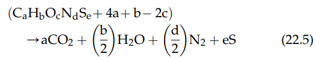
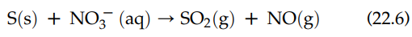
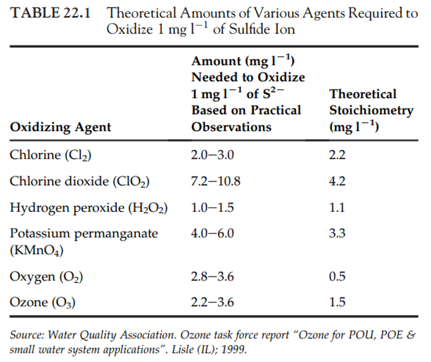
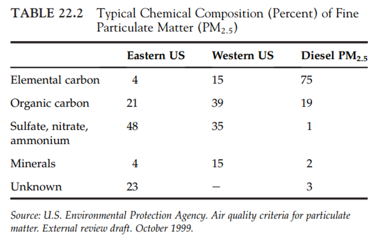
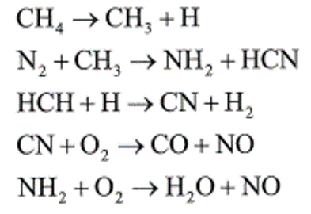
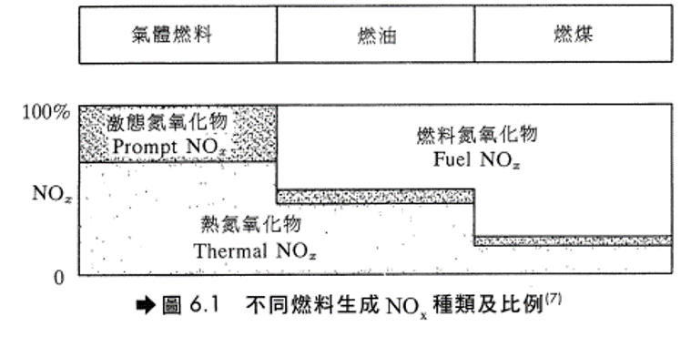
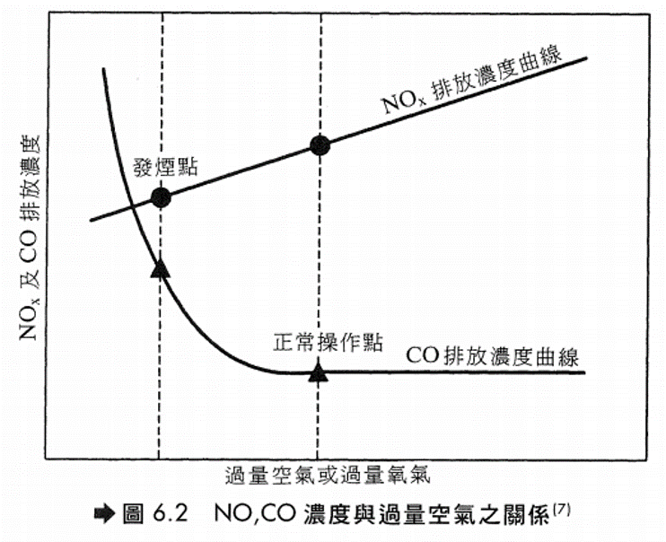
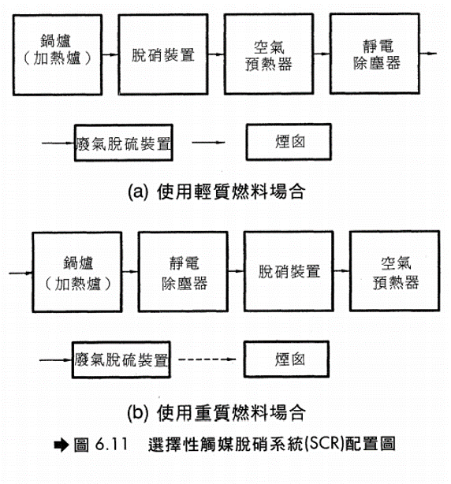

Chapter 10 W12_0510（丁）
10.1 The Nitrogen and Sulfur Cycles–
The nitrogen cycle
- Nitrogen is part of the abiotic (non-living) and biotic (living) parts of earth.
- The element exists in myriad chemical forms that move at varying rates in the nitrogen cycle.
- Like carbon discussed in the previous chapter, N is stored in reservoirs such as the atmosphere, living organisms, soils, and oceans.
- From these sinks, N cycles between the biosphere and the atmosphere. The N cycles among ecosystems and the organisms, including humans, within these ecosystems.
- Most of the earth’s mass of N resides in the atmosphere. Approximately 79% of the molecules in Earth’s atmosphere are molecular nitrogen (N2).
- All organisms must metabolize N into larger molecules; notably amino acids, proteins, and deoxyribonucleic acid (DNA).
- Amino acids contain the functional group amine (NH2) and are the building blocks of proteins.
- DNA consists of adenine, cytosine, guanine, and thymine, which consist of rings of carbon and nitrogen atoms, with various side chains.
- The N2 is not directly available to most organisms (a major exception being the N-fixing bacteria found in legume roots).
- The atmospheric N2 is converted to bioavailable N species (e.g. nitrates; NO3 ) abiotically (e.g. lightning strikes or fires) and biotically (e.g. by the N-fixing bacteria known as diazotrophs).
- Decomposers convert N in the opposite direction, i.e. mineralization, converting the N-containing organic molecules of dead organisms to inorganic compounds, e.g. ammonium (NH4+) salts. The (NH4+) salts have high aqueous solubility and readily absorbed to soil particles.
- At these sites, bacteria and other microbes can oxidize the NH4+ into nitrite (NO2- ) compounds and in turn to nitrate (NO3- ) compounds. This oxidation process is known as nitrification.
- These dissolved oxidized forms of N are reduced (i.e. denitrified) by bacteria known as denitrifiers. This is a major process by which N is returned to the atmosphere.
- Ionization is an important part of N and S cycling, as it is for all nutrient cycling.
- This is due to the configuration of electrons in an atom. The arrangement of the electrons in the atom’s outermost shell, i.e. valence, determines the ultimate chemical behavior of the atom.
- The outer electrons become involved in the transfer and the sharing the shells with other atoms, i.e. forming new compounds and ions.
- An atom will gain or lose valence electrons to form a stable ion that has the same number of electrons as the noble gas nearest the atom’s atomic number.
- As mentioned, the N cycle includes three principal forms that are soluble in water under environmental conditions: the cation (positively charged ion) ammonium (NH4+) and the anions (negatively charged ions) nitrate (NO3-) and nitrite (NO2-).
- Nitrates and nitrites combine with various organic and inorganic compounds.
- Following entry into the body, NO3- is converted to NO2- . Since NO3- is soluble and readily available as a nitrogen source for plants (e.g. to form plant tissue such as amino acids and proteins), farmers are the biggest users of NO3- compounds in commercial fertilizers (although even manure can contain high levels of NO3 ).
- Nitrogen in several forms finds its way from the atmosphere to the soil through abiotic and biotic processes.
- NO3- compounds are formed from lightning and by nitrogen-fixing bacteria in legumes’ root nodules.
- The Rhizobia (genera Rhizobium, Sinorhizobium, and Bradyrhizobium) are Gram-negative motile, rod-shaped, aerobic soil bacteria that infect legume roots in a symbiotic relationship with legumes, e.g. Medicago, Melilotus, and Trigonella.
- The symbiotic relationship results from the bacteria fixing atmospheric nitrogen, providing ammonium for protein production in the plant. In exchange, the bacteria obtain energy from the plant.
- Nitrate compounds are also formed by microbial (fungal and bacterial) degradation of detritus by aerobes and anaerobes on the forest floor. With moisture, numerous simultaneous chemical reactions occur, making for a balance among various chemical forms of N (as well as those of S, P, K, C, and other nutrients).
- The chemical reactions in the N cycle, as in any nutrient cycle, require various energy sources, especially light, heat, and metabolic energy.
- Some biochemical processes within an organism fix molecular nitrogen (N2) from the atmosphere to form simple N-compounds (e.g. diazotrophs in root nodules), which in turn form amino acids in the tissues of plants and animals.
- The mineralization and denitrification occurs by numerous processes, in addition to microbial degradation, including photolysis, hydrolysis, and reduction or oxidation.
- The result is a wide array of conversions of nitrogen-containing organic compounds (e.g. proteins and amino acids) to inorganic (mineral) forms, such as ammonia, ammonium hydroxide, nitrite, and nitrate.
- Note that the gases at the top of Figure in next slide include those that are important in air pollution.

氮元素的循環（1）

氮元素的循環（2）
- For example, NO is one of the compounds involved in the photochemistry that leads to the formation of the pollutant ozone (O3) in the troposphere.
- Note also that the relationship between microbes and macrophytes is central in the figure.
- Much of the chemistry occurs on the floor in the detritus where microbes degrade complex molecules.
- Nutrients in the soil are transported by the roots capillary action to plant cells. Gases are transpired through leaves back to the atmosphere.
- The atmospheric speciation at the top of the Figure is an oversimplification, with many competing processes.
- For example, NO2 compounds in the soil can release nitrous acid (HONO) directly to the atmosphere. When soil contains elevated amounts of nitrates due to fertilization, HONO is released to the atmosphere.
- The more acidic the soil, the greater will be the release of HONO.
- In the troposphere, HONO leads to the formation of hydroxyl radicals, which both degrade and increase the deposition of air pollutants.
- Large volumes of acids are released from soil continuously to the atmosphere. Soils with high N concentrations form the acids from NO2 ions.
- These anions are first released into the soil by microbes that have transformed ammonium and nitrate ions into nitrite ions.
- Increasing soil acidity produces high nitrite concentrations, leading to greater concentrations of HONO emitted to the troposphere.
- About 30% of the primary OH radical production is attributed to the photolysis of HONO.
- The Figure also shows that when organic compounds are degraded by microbes, especially nitrifying bacteria, oxides of nitrogen (NOx) are released to the atmosphere.
- The flux of nitric oxide (NO) and nitrogen dioxide (NO2) from the soil to the lower troposphere is inversely related to the rate of degradation of organic compounds in the soil.
- Ion exchange is actually an example of sorption; i.e., movement of a chemical species from the liquid or gas phase to the solid phase.
- Plants grow as a function of available nutrients that they are able to sorb, which is affected by available N and other cycles within the forest ecosystem.
- With this growth, compounds of N and other nutrients find their way to the atmosphere.
- Nitrogen has three common oxidation states, +3, +4, and +5. Thus, like carbon, the multiple oxidation states mean that N can form many compounds, even with a single, other element.
- For example, it can combine with oxygen to form N2O, NO, NO2, or N2O5, all important air pollutants or precursors to air pollutants.
- Nitrite is an intermediate compound in both nitrification and denitrification.
- The N in the nitrate anion (NO3- ) has an oxidation state of +5 (i.e. three O atoms each with 2 charge plus 5 yields the nitrate charge of 1).
- The nitrite anion has a trivalent N, i.e. N3+ (i.e. two O atoms each with 2 charge plus 3 yields the nitrite charge of 1).
- The major mechanism for producing N3+ in soil is by biological nitrification and denitrification processes.
- Nitrifying microbes produce nitrite ions from ammonium. Denitrifying microbes produce nitrite from nitrate.
- In addition to the ordinary concentrations of molecular N, various nitrogen compounds are formed from reactions ranging from very fast (especially combustion) to quite slow, multistage (microbial) reaction rates.
- The two principal air pollutants regulated throughout the world are nitric oxide and nitrogen dioxide.
\(\require{mhchem}\)
- Nitric oxide (NO) is a colorless, odorless gas and is essentially insoluble in water. Nitrogen dioxide (NO2) has a pungent acid odor and is somewhat soluble in water.
- Air pollution experts now refer to NO and NO2 collectively as NOx. This is in part because the NO lifetime after emission is quite short (>minute <hour).
- The simple oxidation of molecular N at high temperature is \(\ce{N2 + O2 ->[\Delta] 2NO}\) (22.1)
- The emitted NO rapidly undergoes photochemical transformation to NO2: \(\ce{2NO + O2 -> 2NO2}\) (22.2)
- Indeed, NO and NO2 can interconvert, depending on redox and photochemical conditions in the troposphere and stratosphere.
- For example, in sunlight, ultraviolet radiation splits NO2 into NO and O. So, it is often preferred to consider the dynamic relationship of the two molecules rather than to ascribe a single speciation, especially for characterizing the atmosphere.
- However, the two compounds must be distinguished in risk assessments given their very different health effects.
- Mobile sources (i.e. cars, trucks, trains, boats, and aircraft) comprise the largest contributor to NOx emissions in the Untied States (59%; 12.7 Mt in 2002).
- The US’s largest contributing stationary source category is electric generation (22%; 4.6 Mt in 2002), followed by industrial factories (11%; 2.4 Mt in 2002).
- Europe has similar emission profiles for NOx, with the largest percentage coming from mobile sources (road and nonroad transport), and the largest stationary source being energy production and distribution.
- Although both NO and NO2 can be harmful to humans and ecosystems, NO is also actually essential to metabolism, so is harmful at much higher concentrations than that of NO2.
- On the other hand, NO2 is inherently toxic, causing respiratory problems.
- Both compounds are precursors to tropospheric ozone formation, so present indirect health problems when the smog and O3 are inhaled.
- Nitrogen species important to air quality include many compounds in addition to NOx.
- Atmospheric N reactions can be more complicated than may be inferred from Reactions (22.1) and (22.2).
- For example, the NOx reaction from NO to NO2 likely involves water and an intermediate, i.e. nitrous acid (HONO):
\(\ce{4NO +O2 +2H2O -> 4HONO}\)
- The larger suite of N air pollution compounds is known as total reactive nitrogen, which is denoted as NOy. This suite includes NO and NO2, plus their oxidation products.
- The major vapor phase and particulate constituents of NOy include NO, NO2, nitric acid (HNO3), peroxyacetyl nitrate (PAN), HONO, organic nitrates, and particulate nitrates:
\(\ce{NO_{y}= NO2 + NO +HNO_3 +PAN} \\\ce{ + 2NO2O5 + HONO + NO3} \\\ce{+ NO3- compounds + NO3- aerosols}\)
- Every NOy compound is derived directly from NOx emissions or through transformations in the troposphere
- Most of the compounds originate from combustion processes.
- The atmosphere itself is the source of much of the nitrogen leading to the formation of nitrogen compounds.
- Molecular nitrogen (N2) makes up the largest share of gaseous content of the earth’s atmosphere (79% by volume). Because N2 is relatively nonreactive under most atmospheric conditions, it seldom enters into chemical reactions, but under pressure and at very high temperatures, such as in an internal combustion engine or industrial boiler, the molecular N will react with O2, i.e. Reaction (22.1).
- Approximately 90 - 95% of the nitrogen oxides generated in combustion processes are in the form of NO.
- Other nitrogen oxides can also form at high heat and pressure, especially NO2.
- Most motor vehicles around the world still employ temperature/high-pressure internal combustion engines.
- Such mobile sources contribute largely to the tropospheric concentrations of NOx, making it a major mobile source of air pollutant in terms of human health directly (e.g. respiratory toxicity of NO2) and indirectly (i.e. NOx as the key components in tropospheric ozone production).
- These conditions of high temperature and pressure can also exist in boilers such as those in power plants, so NOx is also commonly found in high concentrations leaving fossil fuel power generating stations.
- In addition to the atmospheric molecular nitrogen as a precursor of nitrogen air pollutants of combustion, fossil fuels themselves contain varying concentrations of N.
- Unlike the sulfur compounds, which mainly exit stationary source stacks as vapor phase compounds (e.g. SO2 and other oxides of sulfur), a significant fraction of the fuel nitrogen burned in power plants and other stationary sources remains in the bottom ash or in unburned aerosols in the gases leaving the combustion chamber, i.e. the fly ash.
- Nitrogen oxides can also be released from nitric acid plants and other types of industrial processes involving the generation and/or use of nitric acid (HNO3).
- At temperatures far below combustion, such as those often present in the ambient atmosphere, NO2 can form the molecule NO2-O2N or simply N2O4 that consists of two identical simpler NO2 molecules. This molecular configuration is known as a dimer.
- The dimer N2O4 is distinctly reddish brown and contributes to the brown haze that is often associated with photochemical smog incidents.
- In addition to the health effects associated with NO2 exposure, much of the concern for regulating emissions of nitrogen compounds is to suppress the reactions in the atmosphere that generate the highly reactive molecule ozone (O3).
- Nitrogen oxides play key roles in O3 formation. Ozone forms photochemically (i.e. the reaction is caused or accelerated by light energy) in the lowest level of the atmosphere, known as the troposphere, where people and other biota live.
- Nitrogen dioxide is the principal gas responsible for absorbing sunlight needed for these photochemical reactions.
- In the presence of sunlight, the NO2 that forms from the NO incrementally stimulates the photochemical smog-forming reactions because nitrogen dioxide is very efficient at absorbing sunlight in the ultraviolet portion of its spectrum. This is why ozone episodes are more common in the summer and in areas with ample sunlight.
- Other chemical ingredients, i.e. ozone precursors, in O3 formation include volatile organic compounds, and carbon monoxide (CO). Governments regulate the emissions of precursor compounds to diminish the rate at which O3 forms.
- Cyanide (CN) is another N anion that is important to air pollution.
- Cyanide in the bloodstream impairs oxidative phosphorylation, a process by which oxygen is taken up for the production of essential cellular energy in the form of adenosine triphosphate (ATP).
- This process transfers electrons from nicotinamide adenine dinucleotide to form water from H+ and O2, through a series of reactions catalyzed by enzymes.
- With less O2 available to react with the cytochrome C and hence complete the electron transport process, ATP production is diminished.
- The high binding affinity of CN to the ferric ion in hemoglobin is responsible for the decrease in O2 carried in the blood. Thus, CN binds preferentially to hemoglobin and prohibits oxygen binding

PM2.5 和 臭氧，晚上會生成SOA（次級有機氣膠）；NOx 參與形成SIA,即無機氣膠
- Methemoglobinemia is a particularly troublesome outcome resulting from endogenous production of the CN anion, such as from the exposure of infants to nitrates in drinking water.
- Ingesting high concentrations of nitrates can cause serious short-term illness and even death in infants of 6 months or younger.
- The serious illness in infants is due to the conversion of microbial NO3- to NO2- in the gastrointestinal tract.
- NO3- is more easily converted to NO2- than in adult hemoglobin and circulatory system, which are too immature in small children to return to normal hemoglobin.
- As a result, the increased NO2- concentrations interfere with the oxygen-carrying capacity of the blood.
10.2 The Nitrogen and Sulfur Cycles–
Interactions between Sulfur and Nitrogen
- From the standpoint of air pollution, the biogeochemical cycles must not be limited to single elements.
- As shown in Figure 22.6, after a compound is emitted, it reacts with numerous other compounds and changes physically and chemically.
- It is transported advectively, is dispersed, and finally deposited to the earth’s surface, where it continues to undergo physical, chemical, and biological changes.
- This is demonstrated by the interactions of N and S in acid deposition, as well as by the integration of myriad atmospheric chemical species that influence and are influenced by N and S.
- This includes both the formation of conventional NAAQS pollutants, like ozone and particulate matter (PM), as well as the transformation and changes in bioavailability of toxic air pollutants, e.g. mercury (Hg) and semivolatile organic compounds like dioxins and organochlorine pesticides.

The atmospheric movement of N and S compounds and other pollutants from sources to receptors is only one form of translocation. The second one involves the attempt to control air pollutants at the source. For example, the control of SO2 and PM by wet or dry scrubbing techniques yields large quantities of waste materials often toxic which are subsequently stored onsite at the facility or taken to landfills and other long-term disposal sites. If these wastes are not properly stored, they can be released to soil or water systems, e.g. from runoff of acids or spills into nearby surface water, resulting in acidic, as well as heavy metal and metalloid contamination. The prime examples involve the disposal of toxic materials in dump sites or landfills. However, given the massive volume of wastes generated by energy production, especially ash from coal-fired power plants, such solid waste laws are limited in their ability to ensure proper storage in ash piles and pits, putting adjacent surface water and groundwater at risk.
The oxidized chemical species of sulfur and nitrogen, e.g. sulfur dioxide (SO2) and nitrogen dioxide (NO2), form acids when they react with water. This can occur in any media, e.g. the atmosphere (i.e. acid deposition), and in mining waste and ash runoff to surface waters and groundwater. The lowered pH is responsible for numerous environmental problems. Many compounds contain both N and S along with the typical organic elements (C, H, and O). The reaction for the combustion of such compounds, in general form, is 
Reaction (22.5) demonstrates the incremental complexity as additional elements enter the reaction. In the real world, pure reactions are rare. The environment is filled with mixtures and heterogeneous reactions. Reactions can occur in sequence, parallel, or both.
Combustion specifically and oxidation generally are very important processes that lead to N and S pollutants. But they are certainly not the only ones. Oxidation and reduction of N and S occur in ecosystems as represented by trophic state and energy levels. The formation of sulfur dioxide (SO2) and nitric oxide (NO) by acidifying molecular sulfur is a redox reaction: 
The designations in parentheses give the physical phase of each reactant and product: “s” for solid; “aq” for aqueous; and “g” for gas. The oxidation half-reactions for this reaction are the following:
22.7
The reduction half-reactions for this reaction are as follows:
\(\ce{NO3- -> NO}\)
\(\ce{NO3- + 4H+ +3e^- -> NO + 2H2O}\)
Therefore, the balanced oxidation-reduction reactions are
22.11
10.3 The Nitrogen and Sulfur Cycles–
The Sulfur Cycle
- Compounds of sulfur (S), as those of N, exist at atmospheric concentrations well in excess of what would be expected from equilibrium geochemistry in an atmosphere with 21% O2.
- Sulfur is released to the atmosphere as either reduced forms, e.g. hydrogen sulfide, or oxidized forms, e.g. sulfur dioxide (Figure next slide). Both forms include air pollutants.
- Hydrogen sulfide is oxidized to sulfur dioxide in a three-step process.
- Note that the hydroxyl radical initiates the transformation from hydrogen sulfide to sulfur dioxide:


- The atmospheric reactions of SO2 are very complex, and proceed through at least three different pathways to the sulfate ion (SO4 2-).
- Sulfur dioxide can react with the hydroxyl radical to form the HSO3 radical, which then can react with another hydroxyl radical to form water and SO3 or H2SO4.
- Sulfur dioxide has sufficient aqueous solubility to dissolve in water droplets where it can react with oxygen gas to form SO4 2-.
- The third pathway to sulfate occurs when sulfur dioxide reacts with hydrogen peroxide to form sulfuric acid:

- With sufficient residence time in the atmosphere, S will be oxidized to the sulfate ion, usually forming sulfuric acid (H2SO4).
- Ammonia (NH3), the most common base in the atmosphere, reacts with H2SO4 to form ammonium bisulfate (NH4HSO4) and ammonium sulfate ((NH4)2SO4).
- The compounds H2SO4, NH4HSO4, and (NH4)2SO4 all are hydroscopic substances, i.e. readily dissolved in water.
- Thus, they wash out of the atmosphere during precipitation events.
- Arguably, the most common reduced form of sulfur that is the highly toxic and important pollutant, hydrogen sulfide (H2S).
- Certain microbes, especially bacteria, reduce nitrogen and sulfur, using the N or S as energy sources through the acceptance of electrons.
- For example, sulfur-reducing bacteria can produce H2S by chemically changing oxidized forms of sulfur, especially sulfates (compounds containing the ion, SO4 2-).
- To do so, the bacteria must have access to the sulfur, i.e. it must be in the water, which can be in surface or groundwater, or the water in soil and sediment.
- These sulfur reducers are often anaerobes, i.e. bacteria that live in water where concentrations of molecular oxygen (O2) are deficient.
- The bacteria remove the O2 molecule from the sulfate leaving only the S, which in turn combines with hydrogen (H) to form gaseous H2S.
- In groundwater, sediment water, and soil water, H2S is formed from the anaerobic or nearly anaerobic decomposition of deposits of organic matter, e.g. plant residues.
- Thus, redox principles can be used to treat H2S contamination, i.e. the compound can be oxidized using a number of different oxidants


- Strong oxidizers, like molecular oxygen and hydrogen peroxide, most effectively oxidize the reduced forms of S, N, or any reduced compound.
- Sulfur is also an important component of PM. For example, diesel PM is formed by a number of simultaneous physical processes during cooling and dilution of exhaust, i.e. nucleation, coagulation, condensation, and adsorption.
- The core of the particles is formed by nucleation and coagulation from primary spherical particles consisting of solid carbonaceous matter, known as elemental carbon (EC) and ash (metals and other elements).
- By coagulation, adsorption, and condensation, various organic and S compounds (e.g. sulfates) are added and combined with other condensed material (Figure 22.8)
22.8
- The small diameter of diesel PM (< 0.5 µm) makes for very large surface areas.
- Less than 0.5 µm, these particles have a very large surface area per gram of mass, which allows them to adsorb large quantities of ash, organic compounds, and sulfate.
- The specific surface area of the EC core is approximately 30-50 m2 g-1 .
- The organic constituents originate from unburned fuel, engine lubrication oil, and small quantities of partial combustion and pyrolysis products.
- During combustion, S compounds in the fuel are oxidized to sulfur dioxide (SO2). From 1% to 4% of fuel S is oxidized to form H2SO4.
- Upon cooling, this sulfuric acid and water condense into an aerosol that is non-volatile under ambient conditions.
10.4 氮氧化物(NOx)的控制
氮氧化物P - NOx – NO及NO2之總稱，其中95%為NO。
NOx之影響 - 直接危害人體健康 - 妨害植物生長 - 生成光化學氧化物，通常為煙霧(Smog)。NOx在陽光照射下會與碳氫化合物作用生成以O3為主的氧化物，臭氧會對呼吸器官早成嚴重傷害。 - 造成酸雨，NOx在大氣經過一連串的複雜反應，最後可轉化為硝酸。
台灣96年國家標準NOx排放濃度上限 - 氣體燃料: 150ppm - 液體燃料: 250ppm - 固體燃料: 350ppm
NOx成因及防治原理
- NOx成因
- 在燃燒過程中所產生的NOx主要有下述四種:
- 熱氮氧化物(Thermal NOx): 空氣中N2受熱氧化而形成的NOx。
- 燃料氮氧化物(Fuel NOx): 燃料中有機氮化物轉化而形成的NOx。
- 激態氮氧化物(Prompt NOx): 燃料經系列反應生成碳氫自由基，再與N2反應之後會與O2反 生成NOx物質，以甲烷為例說明如下:

燃料與NOx之產生
- 以天然氣及輕質油料為燃料時，NOx主要來自熱氮氧化物。
- 以重油為燃料時，燃料氮氧化物約佔總NOx量的50%。
- 以煤為燃料時，燃料氮氧化物約佔總NOx量的80%。
- 以不同燃料燃燒所生成之NOx種類及其所佔百分比如圖6.1。

熱氮氧化物的成因及防治 反應式 : 在高溫狀態下，且有過剩O2時產生，可能之反應機制如下:
影響因素 :實驗數據顯示，NO之濃度受溫度之影響最大，而且受N2、O2濃度及反應時間影響，關係如下：
防治方法：因此要降低熱氮氧化物可採下列方式： （１）降低N2含量：因空氣中N2之體積比達0.79，控制不易，故不擬控制。 （２）降低O2含量：可以低過剩空氣法（Low Excess Air, LEA）、分段燃燒法達到此一目的。 （３）降低最高燃燒溫度：可利用煙氣循環法及低空氣預熱法。 （４）減少在高溫之停留時間：煙氣循環法。 燃料氮氧化物的成因及防制 反應式：燃料中的含氮化合物通常是以Carbazole、Pyridine(C5H5N) and quinoline等形態存在。在燃燒時，這些物質會分解或氧化為CN, NH, NH2等分子，然後再進一步氧化為NO。
影響因素: 除了上述反應之外，還有一些反應會阻止或減少NO的生成，例如:
在氧氣不足的情況下，特別有利於上述反應之進行。另外，與熱氮氧化物相反的是燃料氮氧化物對燃燒區溫度不敏感，尤其是用煤做燃料時。但是燃料/空氣的混合狀況對燃料氮氧化物的影響很大，通常混合越好，NOx越多。
防制方法: 基本上要減少Fuel NOx最好的方法是將低過剩空氣法、分段燃燒法及改良式燃燒法一併使用。
NOx防制方法 可分為下列四種: 燃燒前處理: 燃料低氧化處理。 操作方式之改良 燃燒設備改良 燃燒後廢氣處理 燃料低氧化處理 針對液態燃料，如目前使用之重油及未來可能之煤液化燃料及油頁岩，發展加氫脫氮(Hydrodenitrogenaion)製程，開發新的HDN觸媒。 煤炭無法加氫脫氮處理，故盡量採用低氮煤炭。
操作方法之改良(Operational Modification) 歸納起來有下列幾種方法: 低過剩空氣(Low Excess Air, LEA)、低預熱空氣溫度(Reduced Air Preheat, RAP)、偏異燃燒控制(Fuel Biasing)及燃燒器空氣分配(Burners Out of Service, BOOS)。
低過剩空氣(LEA) 燃料若能完全燃燒而沒有過剩空氣，就不會有NOx生成，為目前較常用之控制技術，其效果端視燃料種類而定。 對燃料氣/燃料油其NOx主要來自Thermal NOx，可減少約25%，但對重油及煤炭，因其NOx主要來自Fule NOx，故效果有限，只能減少約5%。

低預熱空氣溫度(RAP) 工廠之加熱爐為了節約能源，通常設有空氣預熱器來加熱一次空氣(Primary Air)，結果使得火焰溫度升高而促進NOx之生成。降低空氣預熱程度可以降低火焰溫度而減少NOx，但也會降低能源效率。本法主要是降低Thermal NOx，因此對使用燃料氣及輕質燃油之場合較為有效。 偏異燃燒控制(Fuel Biasing)及燃燒器空氣分配(BOSS)(均是分段燃燒法的一種) (1)偏異燃燒控制: 在燃料過量之第一次燃燒後再加入補充空氣使剩餘燃料完全燃燒。本法須有較精密的操作技巧，NOx約可降低7%。 (2)燃燒器空氣分配: 將位於較外圍或較高位置的燃燒器之燃料切斷而只供應空氣之操作方式，如圖6.3，此法通常適用於操作量較大的加熱爐，NOx約可降低35%。 (3)以這兩種方法操作有下列好處: (a)可降低燃燒室的最高燃燒溫度。(b) 減少燃燒區之O2濃度。 可說是一種對降低Thermal NOx及Fuel NOx雙管齊下的方法。低過剩空氣配合分段燃燒法為降低NOx排放濃度相當有效的方法，一般可降低約40%的NOx。
燃燒設備改良 主要有下列幾種方法: 煙道氣再循環(Flue Gas Recirculation, FGR)、高位置空氣供應(Over Fire Air, OFA)、水或蒸汽注入(Water or Stream injection)、低NOx燃燒器(Low Nox Burner, LN)及廢氣再燃燒(Reburning)，以下加以介紹。 煙道氣再循環(FGR) 將燃燒後的廢氣再導入加熱爐燃燒，可降低火焰溫度並降低廢氣中含氧量，由於過剩氧氣減少，燃燒時即能有效抑制空氣氮氧化反應(Thermal NOx)。但是對於燃料氮氧化反應(Fuel NOx)之抑制較無效果。此法需將廢氣直接導入爐內的火焰，而不是只進入爐內循環而已，所以需修改加熱爐的部分結構，並增設可耐高溫的鼓風設備，故設備及操作費用較為昂貴。如果有空氣預熱裝置，則除了原有強制送風扇外，亦須增設一台煙道氣循環風扇。一般而言，循環回去爐內的廢氣量越多，NOx的減量效果越好，但是驅動鼓風機需消耗較多的能源。循環風扇可設置在空氣預熱器進口或出口。再循環廢氣量的多寡，影響了NOx的降低量，對於較輕質的燃料(例如柴油)，如果控制廢氣循環量在25%，可降低NOx約60%。

高位置空氣供應(OFA) 此法屬於階段式燃燒(Staged Combustion)的改良方法，亦即先使燃料在空氣不足的狀態下燃燒，然後在燃燒器上方或側方再注入空氣使其完全燃燒。由於在一次燃燒時，火焰溫度降低，故可減少NOx的生成。此法通常配合低過剩空氣(LEA)技術，可得到更好的效果。 基本上，階段式燃燒所利用的觀念為
燃料中的氮
水或蒸汽注入 注入水或蒸汽可降低燃燒火焰溫度，故可減少NOx生成。但此法較消耗能源，通常用於氣渦輪機(Gas Turbine)，原因是注入的水及蒸汽最後仍成為廢氣的一部分，可用以推動氣渦輪機的葉輪(Impeller)產生動力，可抵消耗費能源的不利因素。 低NOx燃燒器(LNB) (1)設計觀念 – 利用特殊設計之燃燒器來達到降低NOx之目的。主要是利用階段式燃燒的原理來設計燃燒器以達到降低燃燒溫度以及調整空氣供應方式以抑制NOx之生成，其設計之理念如圖6.6。 LNB設計上有階段式供應空氣(Staged-Air Burner)及階段式供應燃料(Staged-Fuel Burner)兩種。

(2)階段式供應空氣燃燒器(圖6.7)
燃燒所需空氣分兩段供給，第一次供給空氣量為所需空氣量之20至70%，由於氧氣不足及燃燒溫度降低，故可抑制NOx的生成，剩下的空氣則由二次空氣進氣孔注入，使未完全燃燒氣體在稀薄燃料狀態下進行，一方面使燃燒完全且燃燒溫度亦可不至太高，使得NOx之生成可有效予以控制。
(3) 階段式供應燃料燃燒器(圖6.8)LNB因火焰較長，通常只能用在爐內較深知加熱爐或鍋爐。

廢氣再燃燒(Reburning) 將廢氣再與燃料及空氣接觸，進一步燃燒，可以降低NOx約50%。使燃料及空氣與廢氣在燃嘴火焰外接觸，該區稱為後燃燒區(並非加入火焰直接燃燒)。這是與廢氣再循環(FGR)不同之處。本法是使燃料及空氣先在主燃燒區完全燃燒，所產生的NOx隨著廢氣與燃料及空氣在後燃燒區接觸後部分再還原成氮氣。主燃燒區的溫度約在900~1000 °C，而後燃燒區的溫度可達到1300~1540 °C，還原反應在此發生。由於本方法效果並不顯著，以及天然氣或柴油為燃料的加熱爐由於其NOx產生並不多，故通常不使用此方法。基本上，重質燃料燃燒產生的NOx較多，使用本法可以在較小的投資額下，達到明顯的效果。 燃燒改良對加熱爐操作性能之影響為: (1) 一氧化碳濃度增加 (2)微粒排放量增加 (3) 可能會有未燃燒完全之炭粒排出 (4) 爐膛熱吸收分布狀況之改變 (5) 能源效率之降低
燃燒後廢氣之處理 燃燒後產生的廢氣可以用化學反應的方法，將NOx轉化成無汙染的氮氣。由於控制燃燒技術僅能減少 一部分的NOx，要達到大幅度減量，則須借助脫硝反應的處理。常用的廢氣脫硝處理技術有: 選擇性無觸媒脫硝反應技術(Selective Noncatalytic Reduction, SNCR)，主要有NOx OUT及Thermal De NOx兩種方式。 選擇性觸媒脫硝反應技術(Selective Catalytic Reduction, SCR)。 選擇性無觸媒脫硝反應技術 1. NOx OUT 為Nalco Fuel Tech.推出之脫硝方法，其主要反應如下

反應只在相當狹窄的溫度範圍內進行，當反應溫度低於此溫度範圍時，會形成NH3，若反應溫度高於此溫度範圍時，NOx的還原率會降低。
2. Thermal De NOx
(1)反應式 – 為Exxon Research and Engineering company推出之脫硝方法，其主要反應如下:
正常的反應溫度範圍在1600 °F~2200 °F之間，當溫度降低至1300 °F時，為維持有效的脫硝反應，在注入NH3時需伴隨注入H2，而當煙道器高溫時(T>2200 °F)，注入的NH3反而使NOx增加。 (2) 注意事項 – 在正常反應過程中，會有少許NH3沒有參與反應而造成NH3的溢出(Slipage)，在低溫下，過剩溢出的NH3會與硫或氯成分反應而形成複雜的鹽類，其反應如下: (a) 當煙道氣溫度降至600 °F以下時，NH3會與SO3及蒸汽反應生成(NH4)HSO4及(NH4)2SO4，在商業化加熱爐的實際測試結果，只要定期水洗即可去除硫化物的沉澱物，加熱爐的空氣預熱器並無阻塞或腐蝕的困擾。 (b) 當煙道氣溫低於250 °F時，NH3會與HCl反應形成NH4Cl，造成煙囪不透光率增加的不良結果。

選擇性觸媒脫硝反應技術
- 反應式 – 此法是以NH3為還原劑，經過觸媒將NOx還原為N2，其主要反應如下:
\(\ce{4NO +4NH3 + O2 <=> 4N2 +6H2O}\) \(\ce{2NO2 +4NH3 + O2 <=> 3N2 +6H2O}\)
由於NOx中NO含量達90~95%，因此第一個反應最重要，所以NH3/NOX比值應保持在1左右。由於O2是必要的，因此至少要維持3%以上。為了解反應情況，通常須測量反應後廢氣中NH3的含量，稱為氨溢出量(Ammonia Slipage)，其控制量約為3 ppm。
- 注意事項 – 常用之觸媒為TiO2-V2O5型，其反應溫度約為300~750 °F，廢氣中之硫化物、鉀、砷容易使觸媒中毒，在操作上須注意:
- 盡量避免硫酸銨鹽或硫酸氫鹽的產生。 (2)鉀會吸附在V2O5觸媒表面上，須定期以80 °C熱水清洗再生(1 hr)，以恢復觸媒活性 (3)若廢氣中含有砷，觸媒活性在1000小時操作時間內，即可能衰退50%以上。
- 如果使用重質燃油或固體燃料，廢氣中含有較多的灰分，易造成觸媒床阻塞，故需在反應器進口增設靜電除塵設備(EP)。使用輕質油料或燃料氣，則較無灰分的問題，不必再裝置除塵設備。(裝置參考圖6.11)
- 脫硝反應裝置的設計考慮因素有: (1)氣體流量 (2)氣體溫度 (3)氣體成分: 水蒸汽百分比、O2百分比、NO/NO2的量、SO2及其他會造成觸媒活性降低之抑制劑含量 (4)排放氣體預期NOx濃度及NH3溢出量 (5)壓降 (6) 若欲在現有工廠加裝時，需考慮修改導管方向與尺寸。
